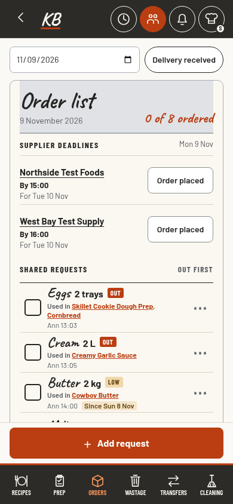
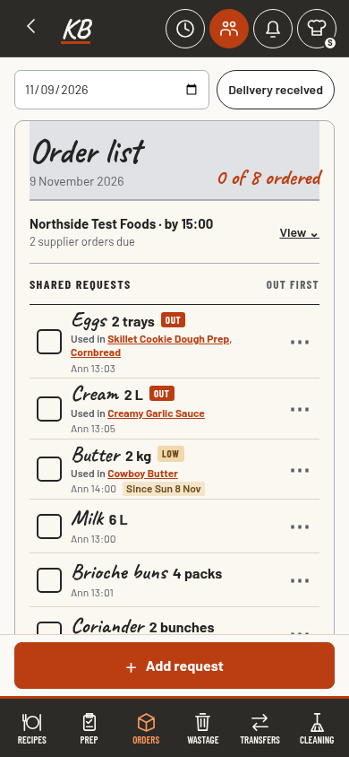

A · Compact rows
3 requests visible · confirm supplier in 1 tap

Every supplier stays visible. More deadlines push requests down.
B · Requests first
5 requests visible · 2 taps via View on a phone
View jumps to separate deadlines. A laptop shows them beside the list.
C · One-line fold
5 requests visible · 2 taps while closed

View opens all deadlines in place. The closed summary stays small.